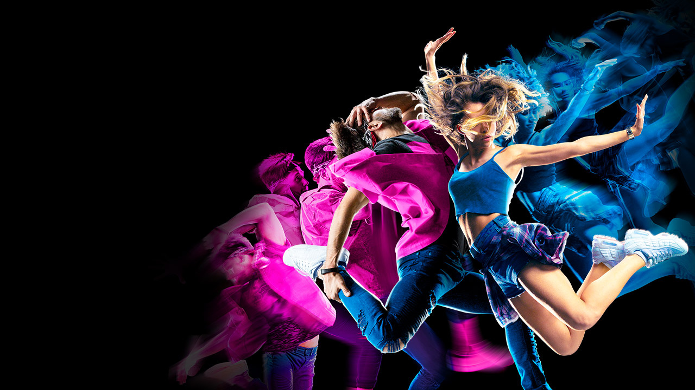

Види танців
Додано, Mar 5, 2025
Види танців:
К-рор - це жанр музики, що поєднує елементи репу, хіп-хопу та популярної музики, створений Кореї.
Jazz Funk - це стиль танцю, що поєднує в собі елементи джазу та фанку, характеризується енергійними рухами, експресивністю та імпровізацією.
Hip hop - це стиль танцю, що виник у рамках культури хіп-хопу, з фокусом на ритмічних рухах та імпровізації.
High Heels - це танцювальний стиль, що акцентується на емоціях та виразносТІ, часто виконуваний на підвищених місцях або "на пагорбах".
К-рор - це жанр музики, що поєднує елементи репу, хіп-хопу та популярної музики, створений Кореї.
Shafl - це танець, що виник в Австралії, характеризується швидкими рухами ніг під електронну музику.